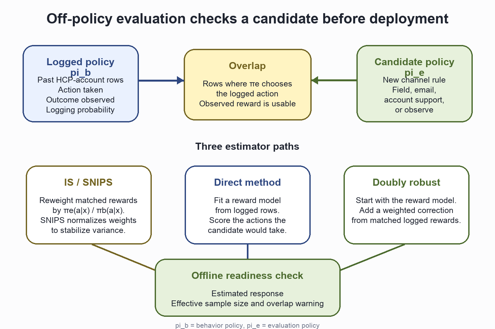

Omnichannel Analytics
Build the 4-week channel plan for the fictional Roventra launch. Start with HCP-account targeting, turn 10 source channels into one event ledger, build a dated channel state, compare response, attribution, uplift, and cost, then release a governed plan row for the next-best-action engine.
from pathlib import Path
import sys
import pandas as pd
ROOT = Path.cwd().resolve()
if not (ROOT / "pyproject.toml").exists():
ROOT = ROOT.parent
sys.path.insert(0, str(ROOT))
sys.path.insert(0, str(ROOT / "ch08_omnichannel" / "generation_modules"))
sys.path.insert(0, str(ROOT / "ch08_omnichannel" / "scripts"))
from ch08_omnichannel.generation_modules.synthetic import generate # noqa: E402
from ch08_omnichannel.scripts.run_analysis import run_analysis # noqa: E402
pd.set_option("display.width", 140)
pd.set_option("display.max_columns", None)
generate(ROOT, ROOT / "ch08_omnichannel" / "data" / "generated")
results = run_analysis(ROOT)
print(f"Ledger events: {len(results['event_ledger']):,}")
print(f"HCP-account snapshots: {len(results['snapshot_panel']):,}")
print(f"Planning HCP-account rows: {len(results['channel_plan']):,}")
Ledger events: 3,650
HCP-account snapshots: 1,422
Planning HCP-account rows: 158
Descriptive: the event ledger
summary = results["channel_summary"].copy()
summary["response"] = summary.response_rate_per_delivered.map(lambda x: f"{x:.1%}")
print(summary[[
"channel", "events", "delivered_events",
"meaningful_responses", "response",
]].set_index("channel"))
events delivered_events meaningful_responses response
channel
Field 815 804 627 78.0%
Email 724 712 499 70.1%
Web 420 415 287 69.2%
Phone 377 369 245 66.4%
Paid media 270 249 120 48.2%
Peer program 256 251 171 68.1%
Direct mail 246 242 173 71.5%
Speaker program 211 206 142 68.9%
Conference 184 180 123 68.3%
Account support 147 145 96 66.2%
Email opens stay visible in the ledger. Clicks define meaningful email response.
email = results["email_quality"].copy()
email["rate"] = email.rate.map(lambda x: f"{x:.1%}")
print(email)
metric events base_events rate
0 Raw open rate 626 712 87.9%
1 Human open rate (answer key) 563 712 79.1%
2 Click rate 499 712 70.1%
3 Click-to-open rate 499 626 79.7%
ledger = results["event_ledger"]
cols = ["event_date", "channel", "response_type", "meaningful_response"]
print(ledger.loc[ledger.npi.eq("9000000280"), cols].tail(3))
event_date channel response_type meaningful_response
1690 2025-01-15 Field Positive True
1691 2025-01-24 Email Opened False
1692 2025-02-10 Web Qualified action True
Descriptive: contact volume and selection
sat = results["saturation"].copy()
for col in ["observed_reach", "adjusted_reach", "adjusted_marginal_gain"]:
sat[col] = sat[col].map(lambda x: f"{x:.1%}" if pd.notna(x) else "")
print(sat[[
"recent_events", "snapshots", "observed_reach",
"adjusted_reach", "adjusted_marginal_gain",
]].to_string(index=False))
recent_events snapshots observed_reach adjusted_reach adjusted_marginal_gain
0 343 37.6% 45.9%
1 433 59.1% 53.6% 7.7%
2 350 66.0% 61.2% 7.5%
3 175 65.7% 68.2% 7.1%
4 83 69.9% 74.6% 6.3%
5+ 38 68.4% 80.0% 5.5%
Predictive: past state and later outcome
panel = results["snapshot_panel"]
row = panel.loc[
panel.npi.eq("9000000280")
& panel.snapshot_date.eq("2025-02-28")
].iloc[0]
print(f"Snapshot: {row.snapshot_date:%Y-%m-%d}")
print(f"Outcome end: {row.outcome_end:%Y-%m-%d}")
print(f"90-day contact pressure: {int(row.total_pressure_90)} events")
print(f"Later meaningful response: {int(row.future_response)}")
Snapshot: 2025-02-28
Outcome end: 2025-03-28
90-day contact pressure: 3 events
Later meaningful response: 0

Figure 8.1. HCP0280's prior 90-day events build the February 28 state. Events above the timeline produced a meaningful response; events below did not. Outcome events after the dashed line are not shown because HCP0280 had none in the next 28 days. Synthetic data.
Predictive: sparse response signals
shrinkage = results["response_shrinkage"].copy()
for col in ["observed_response_rate_90", "shrunken_response_rate_90"]:
shrinkage[col] = shrinkage[col].map(lambda x: f"{x:.1%}")
print(shrinkage[[
"evidence_level", "npi", "meaningful_responses_90", "total_pressure_90",
"observed_response_rate_90", "shrunken_response_rate_90",
]].to_string(index=False))
evidence_level npi meaningful_responses_90 total_pressure_90 observed_response_rate_90 shrunken_response_rate_90
Sparse 9000000008 1 1 100.0% 71.4%
Sparse 9000000085 1 1 100.0% 71.4%
Sparse 9000000122 1 1 100.0% 71.4%
Established 9000000128 8 8 100.0% 83.9%
Established 9000000631 8 8 100.0% 83.9%
Established 9000000462 3 8 37.5% 52.7%
Predictive: the response model
print(results["leakage_check"].round(3).to_string(index=False))
model train_auc test_auc
past_only 0.667 0.711
same_window_leak 1.000 1.000
metrics = results["model_metrics"].copy()
for column in [
"response_rate", "roc_auc", "average_precision",
"brier_score", "base_rate_brier",
]:
metrics[column] = metrics[column].round(3)
print(metrics[[
"split", "snapshots", "response_rate",
"roc_auc", "average_precision",
]])
print()
print(metrics[["split", "brier_score", "base_rate_brier"]])
print()
comparison = results["response_history_baseline"].copy()
for column in [
"test_auc", "average_precision",
"brier_score", "top_20_response_rate",
]:
comparison[column] = comparison[column].map(lambda x: f"{x:.3f}")
comparison["top_20_lift"] = comparison.top_20_lift.map(lambda x: f"{x:.2f}x")
comparison = comparison.rename(columns={
"average_precision": "avg_precision",
"top_20_response_rate": "top20_rate",
"top_20_lift": "top20_lift",
})
print(comparison[[
"model", "test_auc", "avg_precision",
"brier_score", "top20_rate", "top20_lift",
]].to_string(index=False))
print()
features = (
results["model_coefficients"]
.assign(abs_coefficient=lambda frame: frame.coefficient.abs())
.sort_values("abs_coefficient", ascending=False)
.head(8)
.copy()
)
features["feature"] = features.feature.str.replace(
"last_response_channel_", "last_channel=", regex=False
)
features["coefficient"] = features.coefficient.map(lambda x: f"{x:+.3f}")
features["odds_ratio"] = features.odds_ratio.map(lambda x: f"{x:.2f}")
print(features[["feature", "coefficient", "odds_ratio"]].to_string(index=False))
split snapshots response_rate roc_auc average_precision
0 train 948 0.626 0.667 0.745
1 validation 158 0.437 0.636 0.533
2 test 316 0.484 0.711 0.688
split brier_score base_rate_brier
0 train 0.215 0.234
1 validation 0.266 0.282
2 test 0.234 0.270
model test_auc avg_precision brier_score top20_rate top20_lift
full_model 0.711 0.688 0.234 0.734 1.52x
response_history_baseline 0.641 0.639 0.281 0.719 1.48x
feature coefficient odds_ratio
access_resource_score +0.215 1.24
digital_response_rate +0.185 1.20
live_program_attendance_180 +0.177 1.19
last_channel=Paid media -0.126 0.88
last_channel=Direct mail -0.123 0.88
days_since_response -0.112 0.89
last_channel=Web +0.106 1.11
field_responses_90 +0.098 1.10
The field-then-digital order effect is real and modest: two explicit order features move test AUC from 0.707 to 0.714.
contrast = results["field_then_digital_contrast"].copy()
contrast["future_response_rate"] = contrast.future_response_rate.map(
lambda x: f"{x:.1%}"
)
print(contrast.to_string(index=False))
print()
sequence_models = results["sequence_model_comparison"].copy()
sequence_models["roc_auc"] = sequence_models.roc_auc.round(3)
sequence_models["average_precision"] = sequence_models.average_precision.round(3)
print(sequence_models)
recent_field_response snapshots future_responses future_response_rate
Field response in prior 90 days 156 94 60.3%
No recent field response 303 168 55.4%
model test_snapshots roc_auc average_precision
0 aggregate_only 427 0.707 0.664
1 aggregate_plus_sequence 427 0.714 0.670
Causal: who gets credit (attribution)
credit = results["attribution"].set_index("channel")
credit = credit.rename(columns={
"first_touch": "first", "last_touch": "last",
"time_decay": "decay",
})
print(credit.round(1))
first last linear decay
channel
Email 24.2 21.7 22.2 22.4
Field 15.9 25.5 20.7 22.1
Web 11.5 10.8 11.5 10.9
Phone 14.0 6.4 9.8 8.6
Peer program 7.6 8.9 9.1 9.6
Speaker program 7.0 5.7 6.7 6.1
Paid media 4.5 3.8 5.8 5.4
Direct mail 9.6 7.6 5.8 5.5
Conference 3.8 5.7 5.3 5.5
Account support 1.9 3.8 3.2 4.0
markov = results["markov_attribution"].copy()
markov["removal_effect"] = markov.removal_effect.map(lambda x: f"{x:.2f}")
markov["markov_credit"] = markov.markov_credit.map(lambda x: f"{x:.1f}")
print(markov.to_string(index=False))
channel removal_effect markov_credit
Field 0.56 17.3
Email 0.55 17.0
Web 0.39 12.1
Phone 0.36 11.2
Peer program 0.30 9.2
Speaker program 0.27 8.3
Direct mail 0.23 7.1
Conference 0.21 6.5
Paid media 0.21 6.4
Account support 0.16 4.9
Causal: who responds because of us (uplift)
The T-learner treats prior live-program action as the action and next-28-day meaningful response as the outcome. It fits one response model on HCP-account rows with prior live-program action and one on rows without it, then scores every row under both models. The difference is estimated uplift.

Figure 8.2. Four HCP behavioral types in uplift modeling. Arrows show how action changes predicted response: persuadable rows move up, sure things stay high, lost causes stay low, and sleeping dogs move down.
segments = results["uplift_segment_summary"].copy()
for col in ["mean_uplift", "response_rate", "mean_baseline_response"]:
segments[col] = segments[col].map(lambda x: f"{x:.1%}")
print(segments.to_string(index=False))
uplift_segment snapshots response_rate mean_baseline_response mean_predicted_response_if_contacted mean_uplift
High 285 45.3% 43.0% 0.570106 14.0%
Mid-high 284 45.4% 45.2% 0.563355 11.1%
Mid 284 60.9% 50.6% 0.597616 9.1%
Mid-low 284 67.6% 58.8% 0.658259 7.0%
Low 285 67.4% 66.5% 0.708292 4.3%
ranking = results["uplift_ranking_comparison"].copy()
for col in ["mean_baseline_response", "mean_estimated_uplift"]:
ranking[col] = ranking[col].map(lambda x: f"{x:.1%}")
print(ranking.to_string(index=False))
print()
diagnostics = results["uplift_diagnostics"].copy()
for col in [c for c in diagnostics.columns if "snapshots" not in c]:
diagnostics[col] = diagnostics[col].map(lambda x: f"{x:.1%}")
print(diagnostics.T)
ranking selected mean_baseline_response mean_estimated_uplift rows_shared_with_other_ranking
response_ranked 284 72.4% 5.7% 3
uplift_ranked 284 42.9% 14.1% 3
0
treated_snapshots 782
control_snapshots 640
naive_treated_minus_control 17.0%
mean_estimated_uplift 9.1%
observed_uplift_top_quartile 14.4%
observed_uplift_bottom_quartile 7.3%

Figure 8.3. A T-learner scores the same HCP-account row with action and control models, subtracts p0 from p1, and ranks rows by uplift. Synthetic data.

Figure 8.4. Each point is one HCP-account snapshot plotted by its control-model score and action-model score. Color shows estimated uplift. Synthetic data.
Causal: credit, lift, and cost
econ = results["channel_economics"].copy()
econ["credit"] = econ.markov_credit.map(lambda x: f"{x:.1f}%")
econ["incremental"] = econ.incremental_per_touch.map(lambda x: f"{x * 100:+.1f} pp")
econ["unit_cost"] = econ.unit_cost.map(lambda x: f"${x:,.2f}")
econ["cost_per_incremental"] = econ.cost_per_incremental_response.map(
lambda x: f"${x:,.0f}" if pd.notna(x) else "no lift"
)
print(econ[[
"channel", "credit", "incremental", "unit_cost", "cost_per_incremental",
]].to_string(index=False))
channel credit incremental unit_cost cost_per_incremental
Field 17.3% +1.9 pp $225.00 $12,049
Email 17.0% +1.4 pp $0.25 $17
Web 12.1% +0.0 pp $0.12 no lift
Phone 11.2% -2.2 pp $28.00 no lift
Peer program 9.2% +1.4 pp $340.00 $24,169
Speaker program 8.3% -0.9 pp $1,150.00 no lift
Direct mail 7.1% -2.4 pp $2.60 no lift
Conference 6.5% +4.4 pp $760.00 $17,394
Paid media 6.4% +1.0 pp $1.40 $142
Account support 4.9% -1.3 pp $130.00 no lift

Figure 8.5. Email, field, and web look different once path credit, adjusted lift, and cost per incremental response are read together. Synthetic data.
Prescriptive: channel policy and the plan
aff = results["channel_affinity"].copy()
for col in ["digital_response_rate", "field_response_rate"]:
aff[col] = aff[col].map(lambda x: f"{x:.0%}")
print(aff.to_string(index=False))
npi digital_response_rate field_response_rate channel_affinity last_response_channel recommended_channel
9000000280 26% 84% Field responder Web None
9000000389 77% 32% Digital responder Field None
9000000582 12% 88% Field responder Field None
plan = results["plan_summary"].copy()
plan["mean_score"] = plan.mean_predicted_response.map(lambda x: f"{x:.1%}")
print(plan[[
"recommended_action", "relationships",
"planned_contacts", "mean_score",
]].rename(columns={
"relationships": "hcp_account_rows",
"planned_contacts": "planned_engagements",
}))
recommended_action hcp_account_rows planned_engagements mean_score
0 Observe 61 0 58.6%
1 Suppress 46 0 51.0%
2 Access coordination 35 35 66.5%
3 Email follow-up 6 12 75.1%
4 Peer-program invitation 5 5 75.1%
5 Speaker-program invitation 4 4 77.8%
6 Field follow-up 1 2 65.9%
value = results["capacity_value"].copy()
value["expected_responses"] = value.expected_responses.map(lambda x: f"{x:.2f}")
value["mean_score"] = value.mean_predicted_response.map(lambda x: f"{x:.1%}")
print(value[[
"selection_rule", "relationships",
"expected_responses", "mean_score",
]].rename(columns={"relationships": "hcp_account_rows"}))
selection_rule hcp_account_rows expected_responses mean_score
0 model_ranked 16 12.03 75.2%
1 territory_order_baseline 16 11.41 71.3%
ids = ["9000000174", "9000000239", "9000000280", "9000000430", "9000000469"]
cols = ["npi", "account_id", "recommended_action", "reason_code"]
traces = results["channel_plan"].loc[
results["channel_plan"].npi.isin(ids), cols
].sort_values("npi").reset_index(drop=True)
print(traces)
npi account_id recommended_action reason_code
0 9000000174 ACC032 Email follow-up CAPACITY_RANKED_DIGITAL_RESPONSE
1 9000000239 ACC009 Peer-program invitation CAPACITY_RANKED_PEER_RESPONSE
2 9000000280 ACC089 Observe OBSERVE_BELOW_CAPACITY_CUTOFF
3 9000000430 ACC189 Access coordination ROUTE_ACCESS_BOUNDARY
4 9000000469 ACC121 Suppress SUPPRESS_PERMISSION
Prescriptive: off-policy evaluation (handoff to next best action)

Figure 8.6. Off-policy evaluation compares a candidate policy against logged behavior policy data, uses overlap where the logged and candidate actions agree, and estimates offline value through importance weighting, a reward model, or a doubly robust combination.
policy_eval = results["policy_evaluation"].copy()
focus = policy_eval[policy_eval.estimator.isin(["on_policy_mean", "snips"])].copy()
focus["estimated_response_rate"] = focus.estimated_response_rate.map(lambda x: f"{x:.1%}")
focus["effective_sample_size"] = focus.effective_sample_size.map(lambda x: f"{x:.1f}")
print(focus.to_string(index=False))
policy estimator estimated_response_rate matched_snapshots effective_sample_size
logged_policy on_policy_mean 48.7% 158 158.0
candidate_policy snips 56.0% 47 45.5
support = results["policy_support"].head(8).copy()
support["response_rate"] = support.response_rate.map(lambda x: f"{x:.1%}")
print(support.to_string(index=False))
logged_action candidate_action snapshots responses response_rate
Field Field 24 20 83.3%
Live program Field 20 5 25.0%
Observe Observe 18 1 5.6%
Live program Email 14 8 57.1%
Observe Email 14 4 28.6%
Observe Field 14 2 14.3%
Email Field 13 9 69.2%
Field Observe 12 9 75.0%
Conclusion
The ledger preserves channel meaning, the contact-volume curve shows that raw response rises mostly from selection, and the temporal test limits leakage. Attribution credits field and email near 17% each, while the cost view shows very different economics: about $17 per incremental response on email and $12,049 on field. The off-policy check finds the logged history too thin to rank a new policy yet. The rule set keeps permission, access, pressure, and capacity ahead of response signals, routes each action to the HCP's own responsive channel, and releases 16 promotional rows with a reason code, cycle cap, measurement hook, rule-set version, and refresh date.